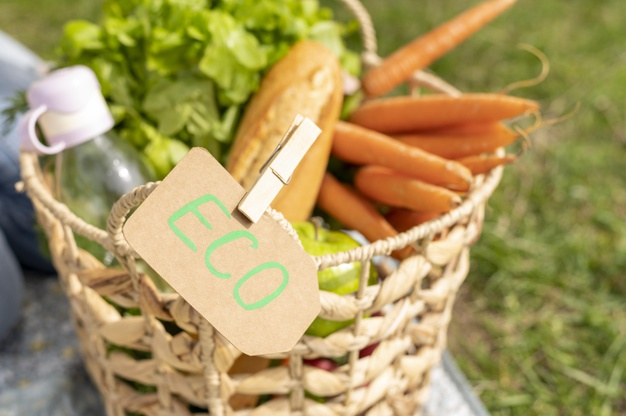
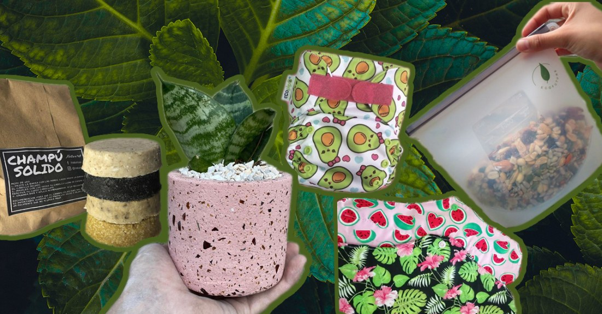
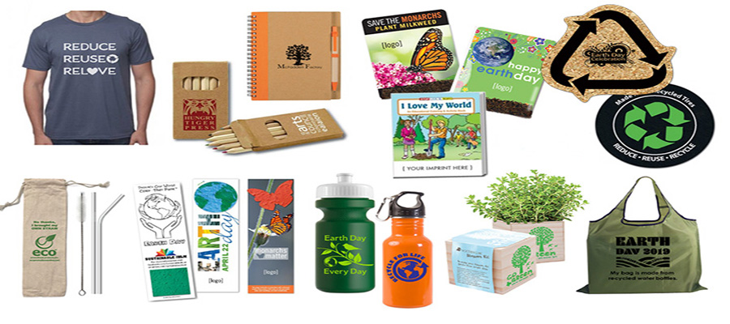
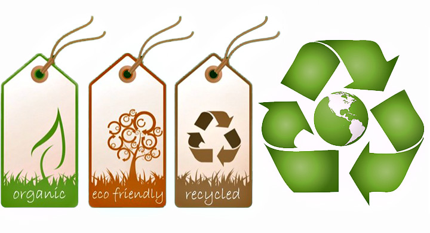
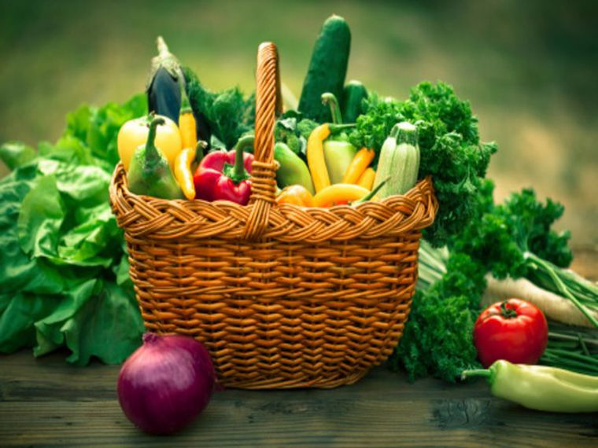
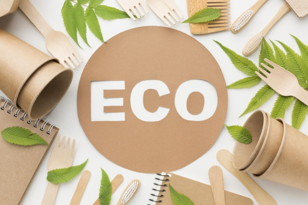
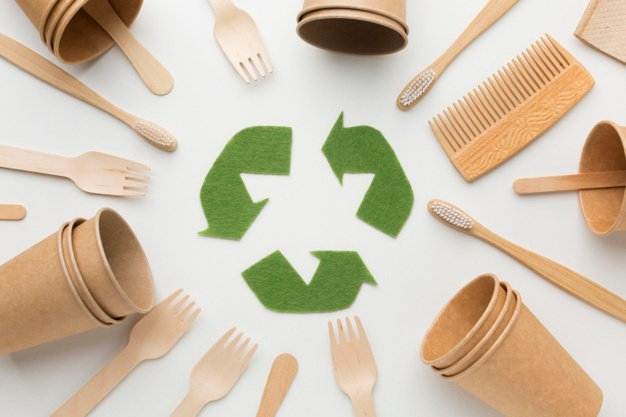
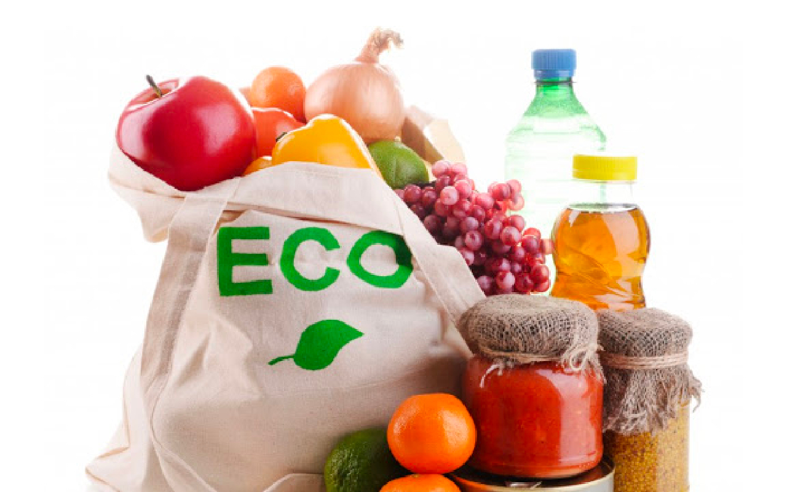
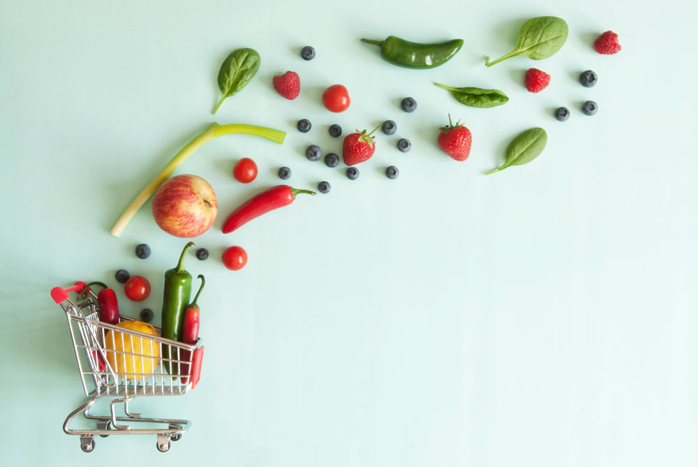

sobre productos ecológicos
Los productos ecológicos son indispensables para el cuidado del medio ambiente
El medio ambiente se conserva sano sin la produccion de elementos dañinos
Algunos productos son realizados en base a elementos naturales








